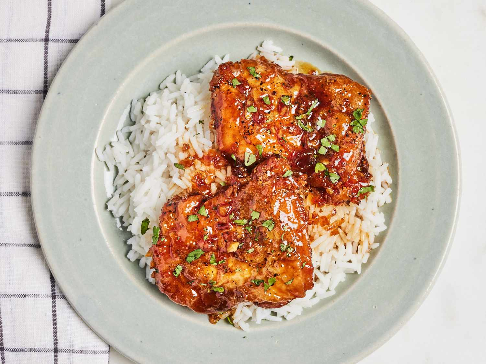

Honey Garlic Chicken

Description
Honey Garlic Chicken is a highly addictive, sweet, and savory dish featuring ultra-crispy, skin-on chicken coated
in a glossy, sticky glaze. The chicken is seasoned deeply with garlic powder and ginger, pan-fried skin-side down
until shatteringly crisp, and then tossed in a bubbling sauce of melted butter, fresh garlic, soy sauce, rice
vinegar, and sweet honey.
Ingredients
- Salt
- Pepper
- Ton of Garlic powder
- Oyster Sauce
- Cornstarch
- Butter
- Thigh piece chicken for flavor
- Honey
- Ginger
Steps
- Marinate chicken with salt,pepper,garlic powder,grated ginger and oyster sauce
- Coat with starch
- Pan Fry, Crisp skin side
- Fry until crips
- Remove and set aside
- Saute aromatics in the same pan
- Melt butter in the same pan and saute fresh garlics until fragrant
- Pour in soy sauce,honey, and rice vinegar
- simmer for 1-2mins until bubbly and sticky
- Coat and serve over rice
HOME